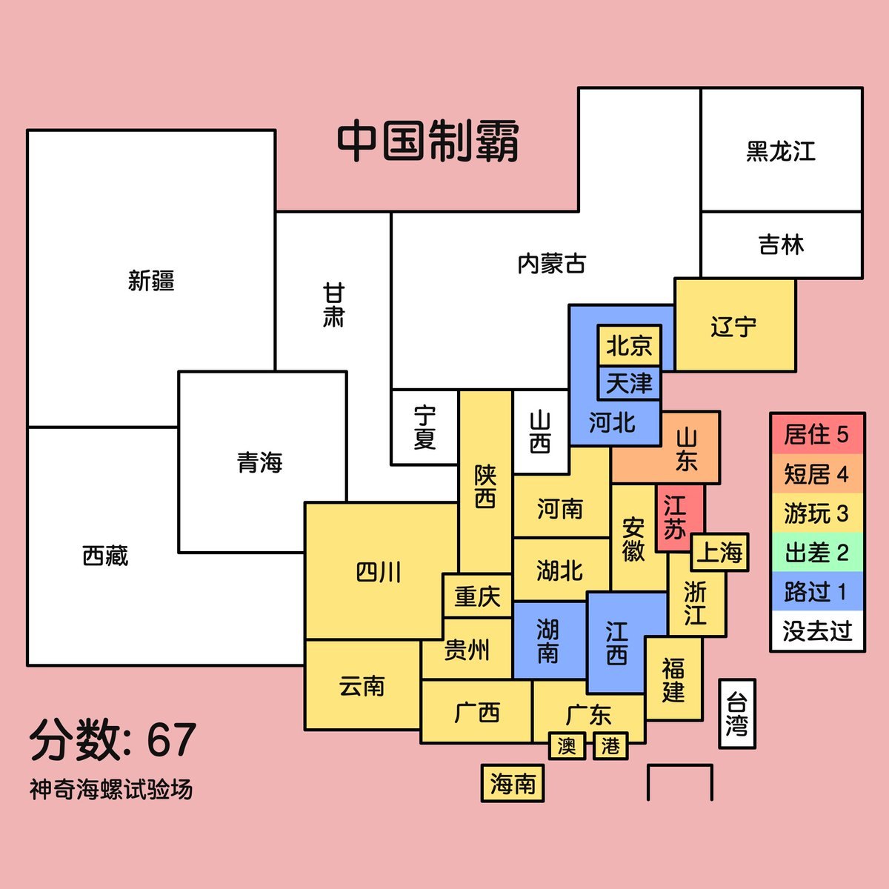

Rain Antares🏳️⚧️🍥
@Rain_Antar1121
@XmeowwoemX_017 咕…现在这个加上甘肃，把浙江改成居住就是咱的情况🥹比咱们旅游经历丰富的人太多啦，而且窝国外去过的地方才叫少，只有新加坡和大马😭不过，咱们见证世界的路才刚开始呢，以后到处跑的机会有的是啦…

💜（猫病第iii期
@XmeowwoemX_017
@Rain_Antar1121 姐姐去过的地方少少的……😿
https://t.co/mWnLBL1358
Rain Antares🏳️⚧️🍥
@Rain_Antar1121
67喵！呜喵咱也要水这个中国制霸！🥹窝可是旅游推主哼咕ヘ(>_<ヘ)
这么看去过的地方好少…面积大的省份都被咱空着了）一直在传统意义的关内活动（x)…等咱补上山西就接近明朝中后期的实控版图了（？ https://t.co/ZZ7oEMNz3Z